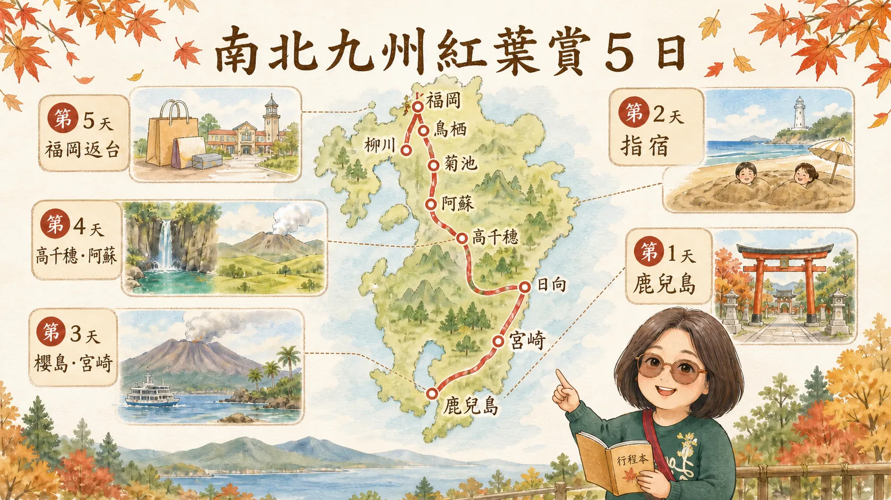
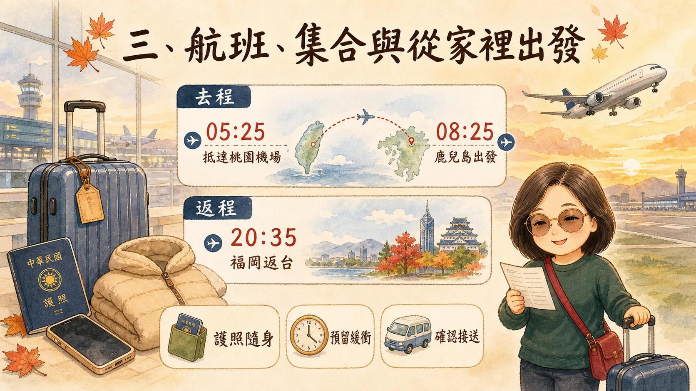
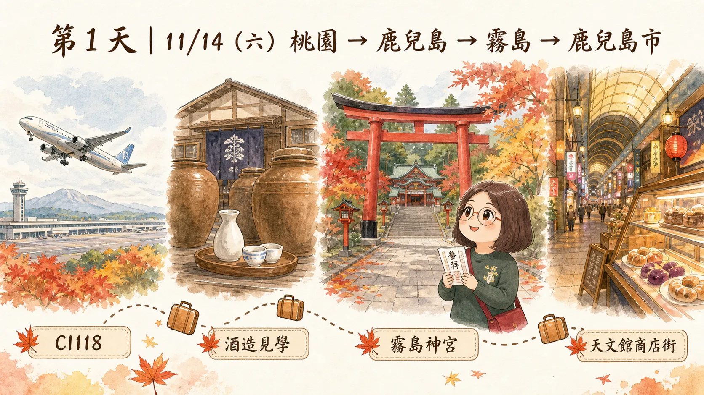
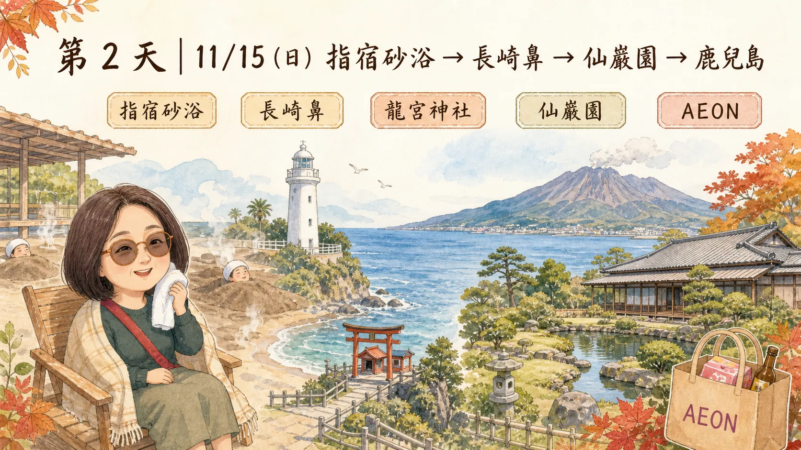
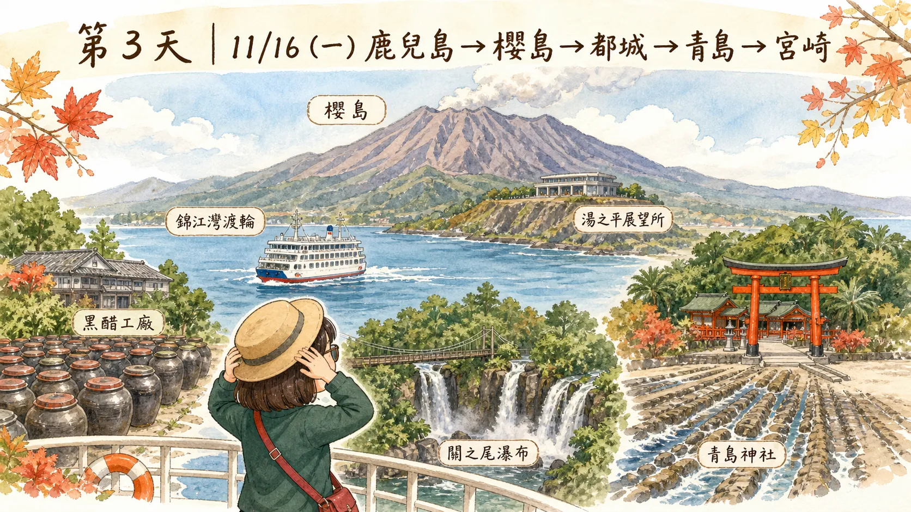
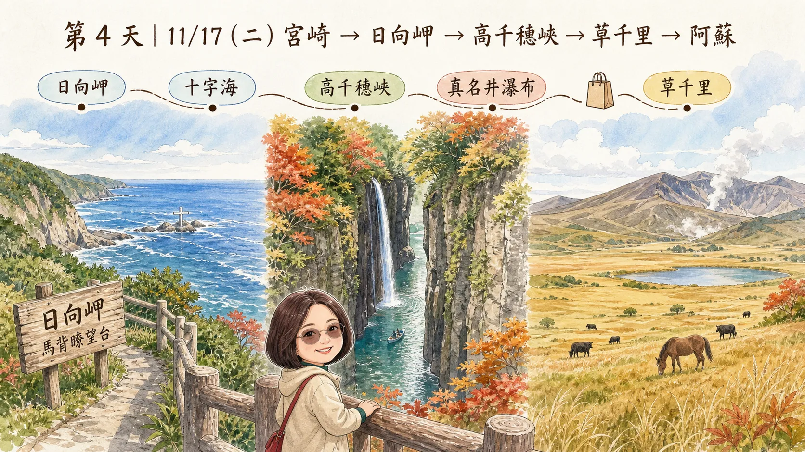
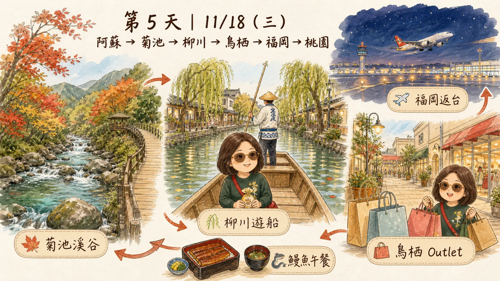

去程｜11/14（六）
CI118
08:25桃園 TPE11:20鹿兒島 KOJ
建議 05:25 前抵達桃園機場，完成團體報到、托運與安檢。
2026.11.14 SAT — 11.18 WED
從鹿兒島的火山與庭園，走到高千穗溪谷、阿蘇草原，再從福岡返台。這是一份方便旅途中隨時打開的個人行程手冊。

本網站的景點順序依旅行社行程整理；建議時間僅供掌握節奏。航班、飯店、餐食與戶外景點將以說明會資料及領隊當日通知為準。
出發前
日本比台灣快 1 小時。請把護照、常用藥、行動電源與保暖外套放入隨身包。
去程｜11/14（六）
建議 05:25 前抵達桃園機場，完成團體報到、托運與安檢。
回程｜11/18（三）
抵達後預留 60～90 分鐘領行李與返家；建議事先安排接送。

住家出發時間 ＝ 05:25 − 實際車程 − 30 分鐘緩衝
五天四夜
先選日期，再看該日的時間、景點與餐食。每天的集合時間請以領隊現場公告為準。
11/14（六）
飛抵鹿兒島後，以酒造、神宮與夜間商店街展開九州旅程。

抵達桃園機場團體集合、報到、托運與安檢。
CI118 飛往鹿兒島機上精緻餐食。
酒造見學與午餐豬排御膳或鹿兒島風味定食。
霧島神宮朱紅社殿、山林秋色與參拜時間。
天文館商店街晚餐自理，可找黑豬料理或白熊刨冰。
與日本建國神話相關的代表神社，朱紅社殿坐落在霧島山麓。石階與地面濕滑時請慢走，參拜區保持安靜。
鹿兒島市中心的有頂商店街，適合晚間覓食、買伴手禮。先與同伴約好集合時間與回飯店路線。
住宿候選：鹿兒島 ARK HOTEL、Lexton、鹿兒島東急、鹿兒島 ART HOTEL 或同級。
11/15（日）
從地熱砂浴、薩摩半島海岸到以櫻島為借景的日式庭園。

前往指宿南下薩摩半島，車程較長。
指宿砂浴砂浴本體約 10～20 分鐘，另預留更衣與淋浴。
長崎鼻與龍宮神社海岸步道、燈塔與祈願景點。
指宿風味午餐以旅行社實際餐廳為準。
仙巖園欣賞錦江灣與櫻島借景。
AEON MALL採買與自由逛街，晚餐自理。
利用海岸地熱覆上溫熱砂放鬆。感到胸悶、頭暈或過熱要立刻示意工作人員；身體不適者可不參加。
島津家別邸庭園，以錦江灣為池、櫻島為假山的借景最具特色，適合把時間留給主要眺望點。
住宿：鹿兒島市區，與第 1 天同等級飯店。
11/16（一）
渡輪、活火山、黑醋、瀑布與青島海岸的一天。

錦江灣渡輪與櫻島海上航程約 15 分鐘，甲板風強。
湯之平展望所遠望櫻島火山與錦江灣。
桷志田黑醋工廠參觀醋甕、了解熟成與試飲。
關之尾瀑布吊橋觀瀑，地面濕滑。
青島神社與鬼之洗衣板海蝕岩層受潮汐影響。
櫻島是活火山地區。遇火山警戒、強風或船班調整，請完全配合領隊替代安排；可備口罩與眼鏡防火山灰。
波浪狀岩層因海蝕而成，觀賞範圍會受潮汐影響。請走既有步道，不進入濕滑岩面。
住宿候選：宮崎 ART HOTEL SKY TOWER、MERIEGES、ANA、宮崎觀光飯店或同級。晚餐為飯店和洋自助餐或日式餐。
11/17（二）
從太平洋海崖走入峽谷瀑布，傍晚抵達阿蘇火山草原。

早餐、出發景點分散，是全程最需要守時的一天。
日向岬馬背瞭望台、十字海海崖景觀，風大時注意安全。
高千穗峽、真名井瀑布與午餐以峽谷步道為主，遊船營運另依當日公告。
免稅店依需求採買，保留集合時間。
草千里阿蘇火山草原，傍晚降溫快。
火山熔岩受河川切割形成高聳峽谷，真名井瀑布約 17 公尺高。秋天美麗也可能人多，穿防滑鞋慢慢走。
阿蘇火山區的寬闊草原。火山活動、道路與能見度都有即時變化，遇限制時不勉強前往。
住宿候選：阿蘇格蘭里奧、阿蘇龜之井 VILLA PARK、阿蘇白雲山莊、阿蘇 HOTEL 或同級。
11/18（三）
以森林溪谷、水鄉遊船與最後購物，收束為福岡晚班機返台。

菊池溪谷賞水色、森林與秋葉，穿防滑鞋。
柳川遊船上下傳統木船時注意踏板。
鰻魚風味午餐旅行最後一頓陸上團餐。
鳥栖 Premium Outlets最後購物，留意行李重量與退稅時間。
福岡機場報到預留托運、安檢與登機時間。
CI117 返回桃園22:20 抵達台灣。
清澈溪水與闊葉林是秋季亮點。實際步道開放、紅葉與停車狀況以當日公告為準，不為拍照離開步道。
舊城水道如今以「川下り」遊船聞名。水面風冷，可將薄外套放在隨身包。
回程：福岡 20:35 起飛、桃園 22:20 抵達。抵台後建議安排接送返家。
出門前檢查
把安全與舒適先收進行李，才能安心看火山、溪谷與海岸風景。